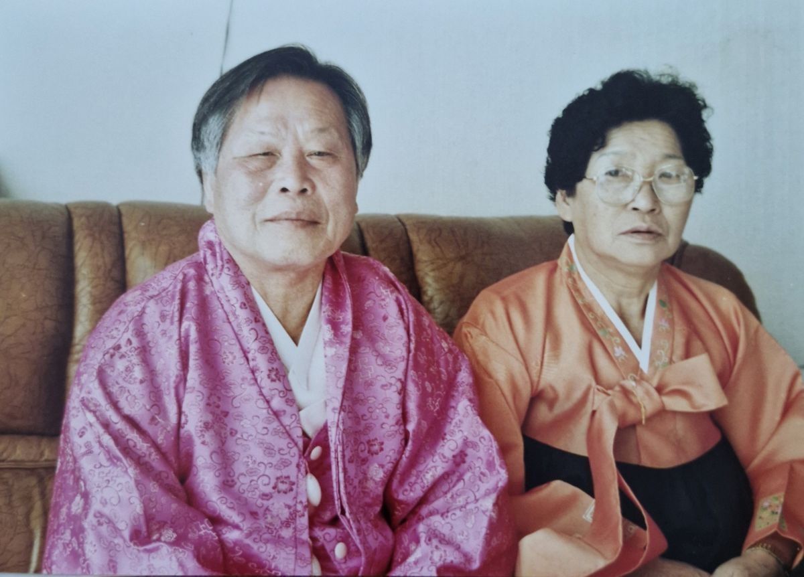

House of Eternity
영원의 집 1호 입주자
조병일 (The First Resident)
“영원히 가족과 함께, 기억과 사랑이 사라지지 않는 집”
인생 이야기 / Life Story
조병일은 영원의 집 프로젝트의 1호 입주자입니다.
가족, 삶, 추억, 유산을 모두 하나의 공간과 블록체인에 남겨
지구가 존재하는 한 사라지지 않는 디지털 영원의 집을 만들고자 합니다.
살아생전의 일, 가족과의 추억, 인생 스토리, 사진과 영상, 음성 기록, 사랑하는 사람들에 대한 마음...
모두 이 집에 저장되어, 후손과 친구, 이웃, 세상 모두가 함께 나눌 수 있습니다.
“죽음도 이별이 아니고, 가족의 사랑과 기억은 영원하다”는
실질적인 증거와 공간을 남기는 것이 바로 영원의 집의 시작입니다.
가족, 삶, 추억, 유산을 모두 하나의 공간과 블록체인에 남겨
지구가 존재하는 한 사라지지 않는 디지털 영원의 집을 만들고자 합니다.
살아생전의 일, 가족과의 추억, 인생 스토리, 사진과 영상, 음성 기록, 사랑하는 사람들에 대한 마음...
모두 이 집에 저장되어, 후손과 친구, 이웃, 세상 모두가 함께 나눌 수 있습니다.
“죽음도 이별이 아니고, 가족의 사랑과 기억은 영원하다”는
실질적인 증거와 공간을 남기는 것이 바로 영원의 집의 시작입니다.
가족관계 Family Tree
(故)조돈성 (故)홍임순
│
┌──────┴──────┐
(故)조용묵 이병순
│
┌────┴─────┐
조병일(0)──김미숙(0_0)
┌────┴─────┐
조아롱(+-1) 조아랑(+-1_2)
│ │
이학일 박병훈
│
이유하(+-2)
대표 사진/영상/음성

대표 사진, 가족 사진, 음성/영상(추후 연결)
AI 대화 / 디지털 인터랙션
AI 메모리봇과 언제든 대화하며
살아있는 듯한 목소리, 기록, 추억, 인생 노트, 가르침을
자녀, 손주, 친구, 미래 세대가 모두 체험할 수 있습니다.
“조병일 님, 살아생전의 기억과 메시지를 영원의 집에서 이어갑니다.”
살아있는 듯한 목소리, 기록, 추억, 인생 노트, 가르침을
자녀, 손주, 친구, 미래 세대가 모두 체험할 수 있습니다.
“조병일 님, 살아생전의 기억과 메시지를 영원의 집에서 이어갑니다.”